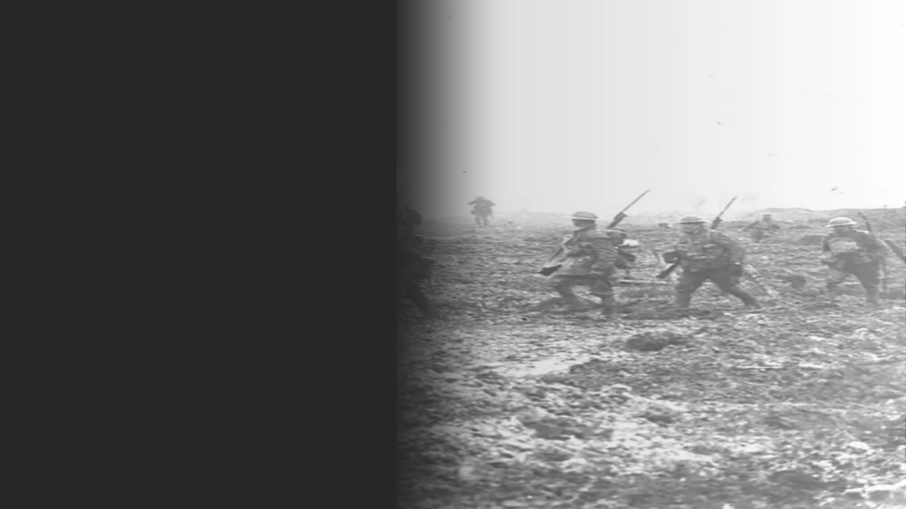
¿Cómo y por qué una crisis europea en 1914 se convirtió en una guerra mundial, y qué transformaciones provocó?
Algunos conceptos necesarios para comprender la Europa de 1914.
Expansión del poder de un Estado sobre otros territorios.
Sentimiento de pertenencia y defensa de los intereses de una nación.
Importancia creciente del poder militar en la política de un Estado.
Acuerdo entre Estados para cooperar y defender intereses comunes.
Estado con gran influencia económica, política o militar.
Preparación y desplazamiento de las fuerzas militares para la guerra.
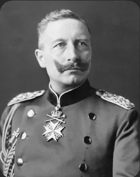
Emperador de Alemania que respaldó la política de expansión y otorgó el "cheque en blanco" a Austria-Hungría al estallar la crisis.
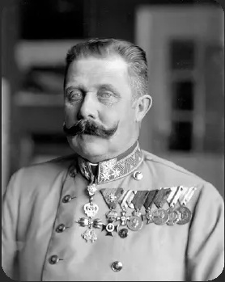
Heredero al trono austrohúngaro cuyo asesinato en Sarajevo el 28 de junio de 1914 desencadenó la crisis diplomática que dio inicio a la Primera Guerra Mundial.
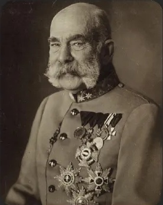
Emperador de Austria y rey de Hungría que firmó la declaración de guerra contra Serbia, activando las alianzas militares europeas.
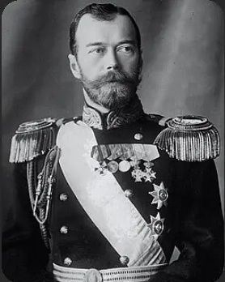
Emperador de Rusia que ordenó la movilización general de las fuerzas armadas en defensa de Serbia, ingresando al bloque aliado.
A finales del siglo XIX, el crecimiento del capitalismo provocó una fuerte competencia entre las potencias europeas por nuevos mercados de exportación, rutas comerciales y materias primas.
La disputa por territorios comerciales y el debilitamiento del Imperio Otomano intensificaron las rivalidades económicas, militares y la desconfianza entre las naciones.
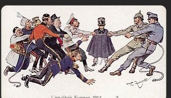
La competencia por territorios y recursos no solo enfrentó a las potencias: también hizo que buscaran aliados.
Buscaban proteger sus intereses y defenderse de posibles agresiones. Estas alianzas dividieron Europa y provocaron que un conflicto local pudiera involucrar a varias potencias.
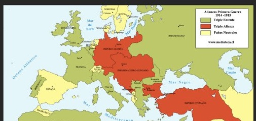
A la par de la formación de las alianzas, las potencias europeas iniciaron una carrera militar. Lo que llevó al pensamiento de que la única forma de evitar un ataque enemigo era estando mejor preparado.
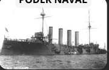
Alemania, bajo el káiser Guillermo II, intentó desafiar el dominio naval británico. Gran Bretaña respondió construyendo el HMS Dreadnought.
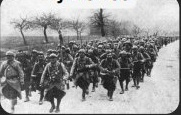
Las potencias incrementaron el tamaño de sus ejércitos mediante el servicio militar obligatorio.
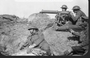
Se centraron en modernizar sus armamentos con fusiles de repetición, artillería pesada y ametralladoras.
En medio de la tensión se presentó el proceso de desintegración del imperio Otomano, lo que generó una serie de hechos que aumentó el conflicto en las potencias.
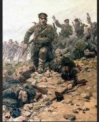
La Liga Balcánica buscó expulsar a los otomanos del continente y repartirse sus territorios restantes, lo que transformó a los Balcanes en el "polvorín de Europa".
El reparto de los territorios generó conflictos entre los vencedores; Bulgaria atacó a sus antiguos aliados y fue derrotada, dejando al Reino de Serbia como la potencia victoriosa de la región, con un agresivo nacionalismo paneslavista.
Las crisis balcánicas alteraron el equilibrio de poder en Europa, ya que Austria-Hungría vio a Serbia como una amenaza directa y Rusia reforzó su compromiso de protegerla, hasta llegar al atentado de Sarajevo.
Nacionalista serbio e integrante de la organización "Joven Bosnia" que provocó el asesinato del archiduque.
Heredero al trono austrohúngaro, cuyo asesinato desencadenó la crisis diplomática.
Alemania puso en marcha el Plan Schlieffen para derrotar rápidamente a Francia mediante la invasión a través de Bélgica.
A principios de septiembre de 1914, las fuerzas anglo-francesas frenaron la ofensiva alemana en el Marne.
La posibilidad de una victoria rápida alemana quedó frustrada y el conflicto tomó otro rumbo.
Incapaces de franquear mutuamente tras la "Carrera hacia el Mar", ambos bandos excavaron una vasta red de trincheras que se extendía ininterrumpidamente desde la costa del mar del Norte hasta la frontera suiza.
Eran pasillos excavados en zigzag contra la metralla, con refugios subterráneos y tarimas de madera sobre el barro, infestados de ratas y piojos.
Sufrían agotamiento, terror por la artillería y trauma psicológico, sobrellevándolo con camaradería, humor negro y treguas tácitas con el enemigo.
Ante el estancamiento europeo, las Potencias Aliadas idearon una operación para tomar la península de Galípoli y el estrecho de los Dardanelos. El fin era doble: abrir una ruta marítima directa para abastecer al Imperio ruso y sacar al Imperio Otomano de la guerra.
La defensa otomana, dirigida por asesores alemanes, infligió fuertes derrotas y numerosas bajas a las fuerzas aliadas. La campaña terminó en una caótica retirada, frustrando las esperanzas de romper el equilibrio del conflicto por el sur.
Estas batallas fueron dos de los enfrentamientos más grandes, sangrientos y devastadores de la Primera Guerra Mundial en el frente occidental.
21 de febrero — 18 de diciembre de 1916
Ubicación: Colinas al norte de Verdún-sur-Meuse, noreste de Francia.
Beligerantes: Alemania contra Francia.
Objetivo: Alemania lanzó una ofensiva masiva con la intención de "desangrar" al ejército francés hasta la extenuación.
Bajas: Alrededor de 700.000 a 750.000 víctimas.
1 de julio — 18 de noviembre de 1916
Ubicación: A lo largo del río Somme, en Francia.
Beligerantes: Tropas franco-británicas (Aliados) contra Alemania.
Objetivo: Romper las líneas alemanas y aliviar la presión que sufrían los franceses en Verdún.
Bajas: Más de 1 millón de bajas (620.000–750.000 aliados y 465.000 alemanes).
El desmedido esfuerzo bélico, la escasez generalizada y las colosales pérdidas humanas quebrantaron el apoyo popular al régimen zarista.
Las revueltas de febrero de 1917 derrocaron al Zar Nicolás II, instaurando un gobierno provisional que decidió continuar la guerra.
La incapacidad del gobierno provisional para estabilizar el país propició la Revolución de Octubre de 1917.
Los bolcheviques tomaron el poder y firmaron el Tratado de Brest-Litovsk a principios de 1918, cediendo vastos territorios a cambio de retirar a Rusia de la guerra.
Alemania reanudó a principios de 1917 la guerra submarina sin restricciones, hundiendo embarcaciones mercantes y estadounidenses. Esto incrementó el conflicto diplomático con Estados Unidos.
Alemania propuso a México una alianza contra Estados Unidos en caso de que este último entrara en la guerra. El contenido del telegrama fue interceptado y conocido por el gobierno estadounidense.
Ante el deterioro de las relaciones, Estados Unidos declaró la guerra a Alemania el 6 de abril de 1917. La declaración inyectó un flujo masivo de recursos financieros, suministros industriales y tropas de refresco al bando aliado.
Presentada por Alemania · 21 de marzo – 18 de julio de 1918
Causantes: Salida de Rusia del conflicto, inminente llegada masiva de tropas estadounidenses, posible colapso de la economía alemana por bloqueo naval.
Objetivo: Romper las líneas aliadas en el Frente Occidental.
Resultado: Aunque lograron avances iniciales, las fuerzas alemanas se quedaron sin reservas ni suministros.
Presentada por los Aliados · 8 de agosto – 11 de noviembre de 1918
Causantes: Superioridad material de EE.UU. y fracaso alemán en la Ofensiva de la Primavera.
Objetivo: Contraataque general coordinado usando tanques, infantería y apoyo aéreo.
Resultado: Precipitó el derrumbe militar de los Imperios Centrales, la abdicación del Kaiser y la firma del armisticio.
Firmado el 28 de junio de 1919 tras la Conferencia de Paz de París, este acuerdo entre los aliados reorganizó el mapa de Europa y fijó las condiciones de rendición para las Potencias Centrales.
Lejos de garantizar una paz duradera, el Tratado de Versalles generó una gran inestabilidad económica y política en Europa.
Más de 9.4 millones de fallecidos y \$208.5 millones en gastos.
Total Aliados y EE.UU.: 5.421.000 fallecidos · Total Potencias Centrales: 4.029.000 fallecidos.
Total Absoluto: 9.450.000 muertes y \$208.5 millones en gastos de guerra.
Nuevas fronteras en Europa y Oriente Próximo.
Reconfiguración europea: Surgieron nuevos Estados para frenar la expansión soviética, aunque millones de minorías quedaron atrapadas en fronteras ajenas.
Reparto de Oriente Próximo: Gran Bretaña y Francia dividieron el Imperio Otomano sin respetar identidades locales, generando conflictos permanentes.
Emancipación social y política acelerada por la guerra.
Autonomía: Ocuparon empleos antes exclusivos para hombres, logrando independencia fuera del hogar.
Emancipación: Transformaron las costumbres y consiguieron la aprobación del sufragio femenino en varios países.
La Primera Guerra Mundial escaló de un conflicto balcánico a una guerra global debido a décadas de rivalidades imperialistas, carreras armamentistas y alianzas militares, culminando con la caída de los grandes imperios tradicionales y una profunda reconfiguración geopolítica, económica y social del siglo XX.
Cayeron cuatro grandes imperios y se redibujaron las fronteras de Europa y Oriente Próximo.
Se impulsó el sufragio femenino y el poder financiero mundial pasó de Europa a Estados Unidos.
Las duras sanciones de la posguerra y el resentimiento acumulado crearon una paz inestable que detonó la Segunda Guerra Mundial.
Has llegado al final de este recorrido por la Primera Guerra Mundial. Ahora que conoces los acontecimientos, sus protagonistas y las consecuencias que transformaron el mundo, te dejamos dos recursos preparados por nuestro equipo para profundizar en lo aprendido:
Revive los hechos más destacados a través de nuestro análisis y conversación.
Pon a prueba tus conocimientos y comprueba cuánto aprendiste.
Aquí va el videopodcast
Configura el enlace del video en app.js (variable VIDEO_URL)Somos un grupo de estudiantes de la Universidad Católica San Pablo apasionados por la programación y la historia.
ariana.pinto@ucsp.edu.pe
gabriel.coaquira@ucsp.edu.pe
samuel.diaz@ucsp.edu.pe
diego.sosa@ucsp.edu.pe
tiago.suarez@ucsp.edu.pe
benjamin.mamani.valdez@ucsp.edu.pe
diego.aragon@ucsp.edu.pe
MacMillan, M. (2013). The war that ended peace: The road to 1914. Random House.
Clark, C. (2012). The sleepwalkers: How Europe went to war in 1914. HarperCollins.
Stibbe, M. (2001). Germany, 1914–1918: Politics, society and culture in wartime. Routledge.
Sked, A. (2008). Decline and fall of the Habsburg Empire, 1815–1918. Longman.
Erickson, E. J. (2001). Ordered to die: A history of the Ottoman army in the First World War. Greenwood Press.
Figes, O. (1996). A people's tragedy: The Russian Revolution 1891–1924. Jonathan Cape.
Watson, A. (2014). Ring of steel: Germany and Austria-Hungary in World War I. Yale University Press.
Adams, R. J. Q. (1999). Arms and the wizard: Lloyd George and the Ministry of Munitions, 1915–1916. Texas A&M University Press.
Stevenson, D. (2004). 1914–1918: The history of the First World War. Penguin Books.
Rogan, E. (2016). La caída de los otomanos: La Gran Guerra en el Oriente Próximo. Crítica.
Hobsbawm, E. (1998). Historia del siglo XX: 1914-1991. Crítica.